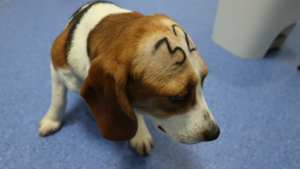

Recientemente sse ha experimentando en Barcelona con perros Beagle para el estudio de ciertos fármacos.
Esta campaña está recolentando dinero para impedir el uso de los animales domesticos como ratas de laboratorio.

¿Quienes somos?
Soy Carlos, ingeniero de Telecomunicaciones.
Desde que tengo uso de razón la mejor compañia han sido los animales, por ello
me implico con está ayuda para intentar hacer una campaña para impedir que se siga
experimentando con animales domesticos.
Descripción
El dinero recolectado será empleado en realizar diferentes cursos para concenciar a más gente del problema.
Además se usará para mover los papeles necesarios para llevar la propuesta a tribunales, necesitando un despacho
jurídico para ello.
Todos los pasos que se vayan dando serán especificando a todo aquel que apoye la causa.